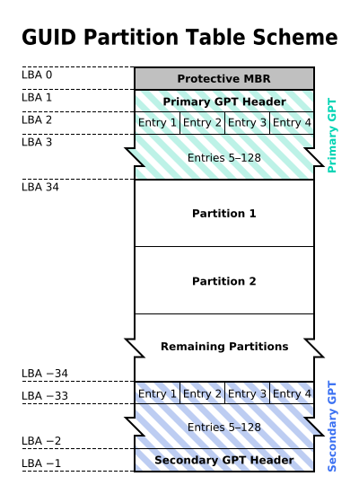
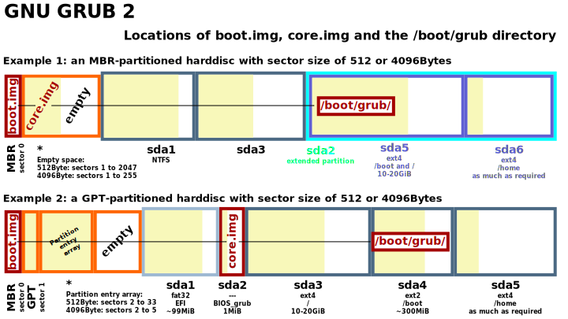

master boot record
GPT
* EFI system partition
MBR
MBR Content
MBR information
- Master Boot Record
- Boot sector at fist sector of mass storage - preceding the first partition
- Contain executable code to run operating system or passing to loader's second stage like grub
MBR Content
- Partition table
- Bootstarp code - passing to bootable partition loader, ...
MBR information
- Number of partition - 4 primary
- Size of partition ( 2 TB - max )
| Address | Description | Size (bytes) | ||
|---|---|---|---|---|
| Hex | Dec | |||
| +000h | +0 | Bootstrap code area | 446 | |
| +1BEh | +446 | Partition entry #1 | Partition table (for primary partitions) | 16 |
| +1CEh | +462 | Partition entry #2 | 16 | |
| +1DEh | +478 | Partition entry #3 | 16 | |
| +1EEh | +494 | Partition entry #4 | 16 | |
| +1FEh | +510 | 55h | Boot signature[a] | 2 |
| +1FFh | +511 | AAh | ||
| 512 | ||||
GPT
GPT content
- GUID Partition Table
- Replace with MBR
- Part of EFI standard
- 2*64 - max disk size - 128 partition ( could be more than it )
GPT content
- sector 0 for mbr protective - GPT header begin from sector 1 from hard disk - entries
- copy header and entries at end of the disk

booting: gpt/mbr in bios based computer

| Directory | Description |
|---|---|
| Primary hierarchy root and root directory of the entire file system hierarchy. |
| Essential command binaries that need to be available in single user mode; for all users, e.g., cat, ls, cp. |
| Boot loader files, e.g., kernels, initrd. |
| Essential devices, e.g., /dev/null. |
| Host-specific system-wide configuration files There has been controversy over the meaning of the name itself. In early versions of the UNIX Implementation Document from Bell labs, /etc is referred to as the etcetera directory, [ 2 ] as this directory historically held everything that did not belong elsewhere (however, the FHS restricts /etc to static configuration files and may not contain binaries). [ 3 ] Since the publication of early documentation, the directory name has been re-explained in various ways. Recent interpretations include backronyms such as "Editable Text Configuration" or "Extended Tool Chest". |
| Configuration files for the X Window System, version 11. |
| Users'home directories, containing saved files, personal settings, etc. |
| Libraries essential for the binaries in /bin/ and /sbin/ . |
| Mount points for removable media such as CD-ROMs(appeared in FHS-2.3). |
| Temporarily mounted filesystems. |
| Optional application software packages. |
| Virtual filesystem providing process and kernel information as files. In Linux, corresponds to a procfs mount. |
| Home directory for the root user. |
| Run-time variable data: Information about the running system since last boot, e.g. , currently logged-in users and running daemons. |
| Essential system binaries, e.g. , fsck, init, route. |
| Temporary files (see also /var/tmp ). Often not preserved between system reboots, and may be severely size restricted. |
| Secondary hierarchy for read-only user data; contains the majority of (multi-)user utilities and applications. |
| Non-essential command binaries (not needed in single user mode); for all users. |
| Standard include files. |
| Libraries for the binaries in /usr/bin/ and /usr/sbin/ . |
| Tertiary hierarchy for local data, specific to this host. Typically has further subdirectories, e.g. , bin/ , lib/ , share/ . |
| Non-essential system binaries, e.g., daemons for various network-services. |
| Architecture-independent (shared) data. example: docs, icons, font, ... |
| Source code, e.g. , the kernel source code with its header files. |
| Variable files—files whose content is expected to continually change during normal operation of the system—such as logs, spool files, and temporary e-mail files. |
| Application cache data. Such data are locally generated as a result of time-consuming I/O or calculation. The application must be able to regenerate or restore the data. The cached files can be deleted without loss of data. |
| State information. Persistent data modified by programs as they run, e.g., databases, packaging system metadata, etc. |
| Lock files. Files keeping track of resources currently in use. |
| Log files. Various logs. |
| Users'mailboxes. |
| Variable data from add-on packages that are stored in /opt/ . |
| Spool for tasks waiting to be processed, e.g. , print queues and outgoing mail queue. |
| Temporary files to be preserved between reboots. |